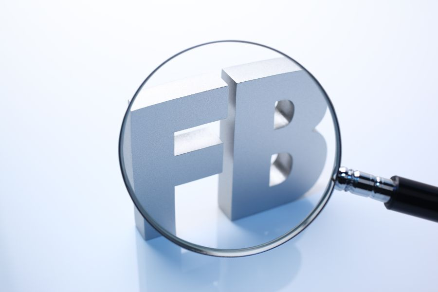
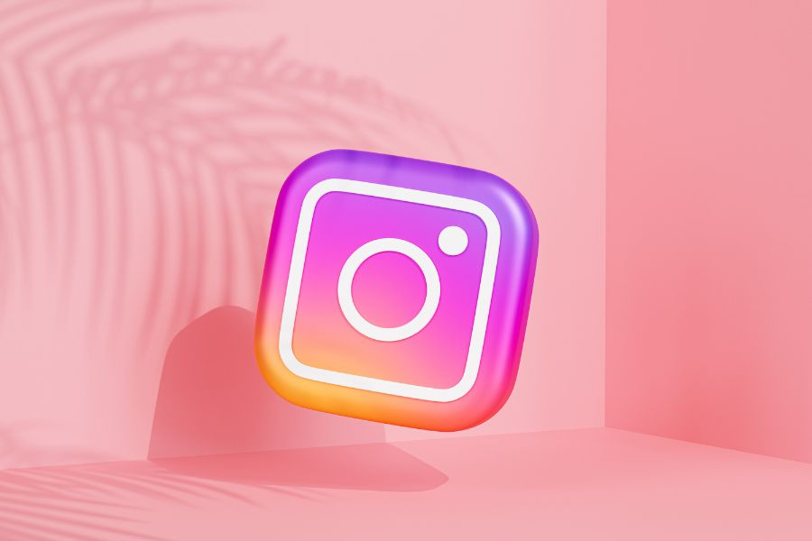
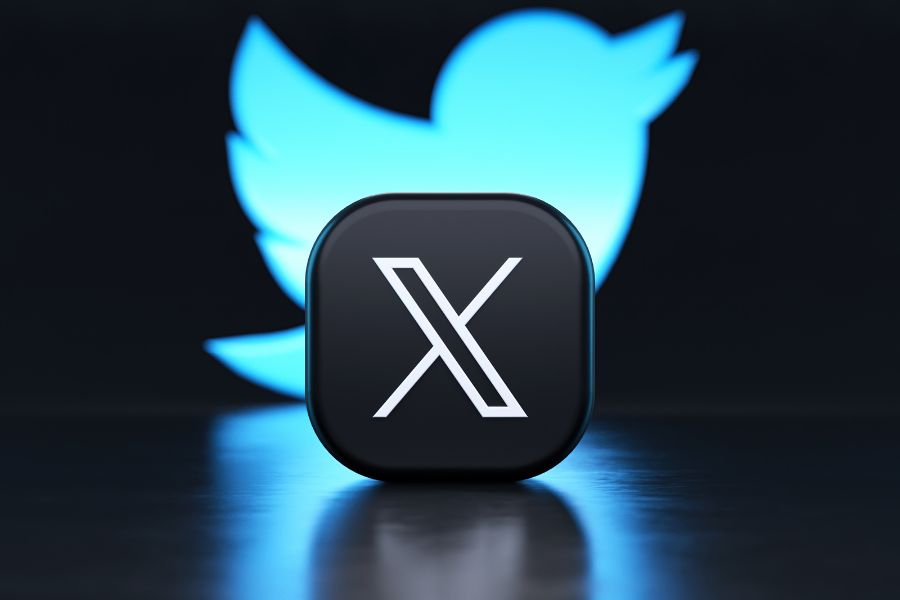
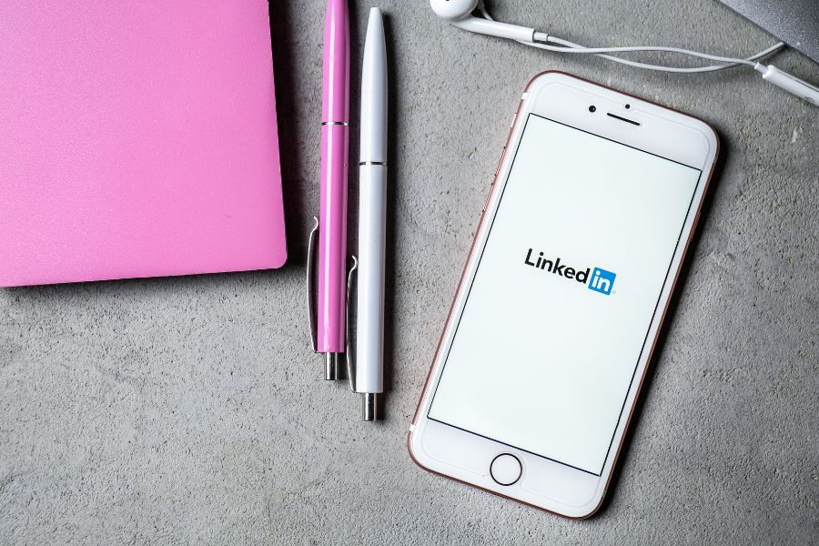
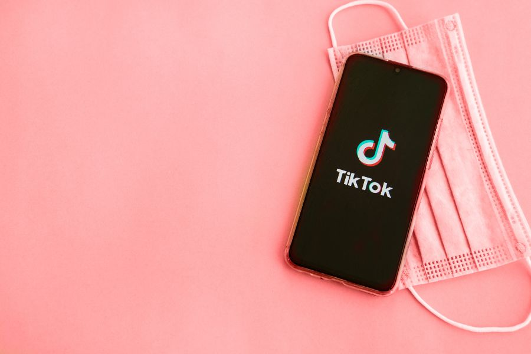

Trong thời đại số, mạng xã hội không chỉ là nơi kết nối mọi người mà còn là công cụ Marketing vô cùng hiệu quả dành cho doanh nghiệp và cá nhân. Tuy nhiên, để nội dung tiếp cận được nhiều người hơn, việc lựa chọn đúng "khung giờ vàng" đăng bài là yếu tố rất quan trọng. Dưới đây là những thời điểm được đánh giá mang lại hiệu quả cao trên các nền tảng mạng xã hội phổ biến.
1. Facebook

Facebook vẫn là nền tảng mạng xã hội có lượng người dùng đông đảo và phù hợp với hầu hết các ngành nghề.
Khung giờ hiệu quả nhất thường là:
- 09:00 - 11:00 sáng.
- 14:00 - 16:00 chiều.
- Cuối tuần (Thứ 7 và Chủ nhật) thường có lượng tương tác cao.
Doanh nghiệp cũng nên cân nhắc múi giờ của khách hàng mục tiêu để đạt hiệu quả tối ưu.
2. Instagram

Người dùng Instagram chủ yếu truy cập bằng điện thoại, vì vậy thời điểm nghỉ trưa và sau giờ làm việc thường mang lại lượng tương tác cao hơn.
- 11:00 - 13:00.
- 19:00 - 21:00.
Thứ Hai, Thứ Tư và Thứ Năm là những ngày đăng bài hiệu quả nhất, trong đó Thứ Tư thường có lượng tương tác cao nhất.
3. Twitter (X)

Twitter là nền tảng có tốc độ lan truyền thông tin rất nhanh, do đó việc lựa chọn đúng thời điểm đăng bài rất quan trọng.
- 12:00 - 15:00.
- 18:00 - 21:00.
Bên cạnh đó, việc sử dụng hashtag phù hợp và tích cực tham gia các chủ đề đang thịnh hành sẽ giúp tăng khả năng tiếp cận.
4. LinkedIn

LinkedIn là mạng xã hội dành cho doanh nghiệp và giới chuyên môn, vì vậy thời gian làm việc là thời điểm phù hợp nhất để đăng nội dung.
- 10:00 - 11:00 sáng.
- 14:00 - 16:00 chiều.
Đây là khoảng thời gian người dùng thường tìm kiếm cơ hội việc làm, kết nối đối tác và cập nhật kiến thức chuyên ngành.
5. TikTok

TikTok không có một khung giờ cố định cho tất cả các kênh, tuy nhiên vẫn có một số khoảng thời gian mang lại lượng tương tác cao.
- 06:00 - 08:00 sáng.
- 11:00 - 12:00 trưa.
- 18:00 - 21:00 tối.
- 22:00 - 24:00 dành cho Gen Z, game thủ và người dùng hoạt động khuya.
Doanh nghiệp nên theo dõi Insight của tài khoản để lựa chọn thời điểm phù hợp nhất với tệp khách hàng của mình.
6. Kết luận
Không có một "khung giờ vàng" nào phù hợp với tất cả doanh nghiệp. Điều quan trọng là hiểu rõ đối tượng mục tiêu, hành vi sử dụng mạng xã hội và thường xuyên theo dõi dữ liệu tương tác để tối ưu thời điểm đăng bài.
Việc kết hợp nội dung chất lượng với thời gian đăng phù hợp sẽ giúp tăng khả năng tiếp cận, nâng cao tương tác và góp phần phát triển thương hiệu bền vững trên các nền tảng mạng xã hội.
Bài viết liên quan

TOP 7 XU HƯỚNG MARKETING 2024
Năm 2024 hứa hẹn sẽ mang đến những thay đổi bùng nổ cho ngành Marketing, mở ra cơ hội lớn cho doanh nghiệp bứt phá.
Xem chi tiết »
SORA CỦA OPENAI: SỰ KẾT HỢP GIỮA AI VÀ SÁNG TẠO VIDEO
OpenAI đã tạo nên bước tiến lớn với Sora - AI tạo video từ văn bản.
Xem chi tiết »
YOUBRANDING 2023: CUỘC THI XÂY DỰNG THƯƠNG HIỆU CÁ NHÂN
Cuộc thi YouBranding 2023 đã chính thức trở lại với nhiều hoạt động sáng tạo.
Xem chi tiết »